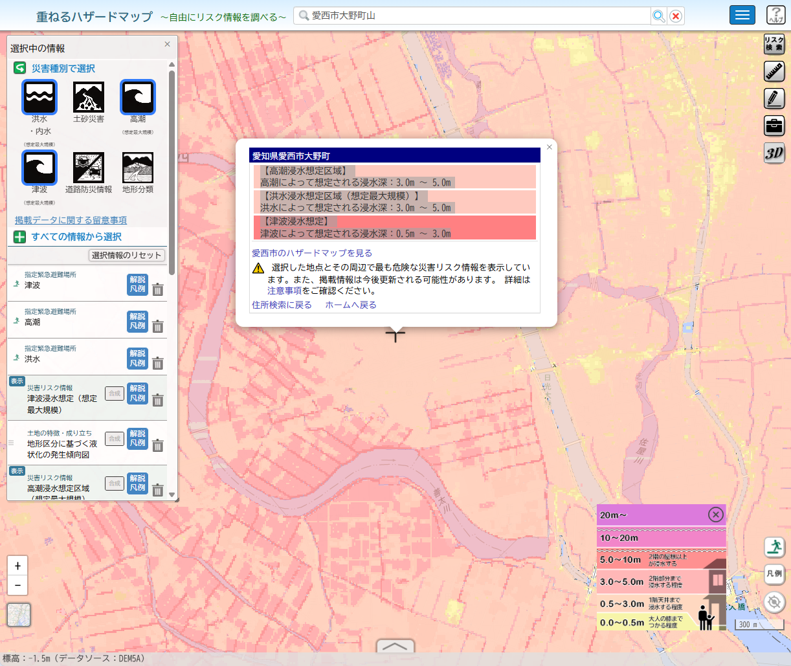
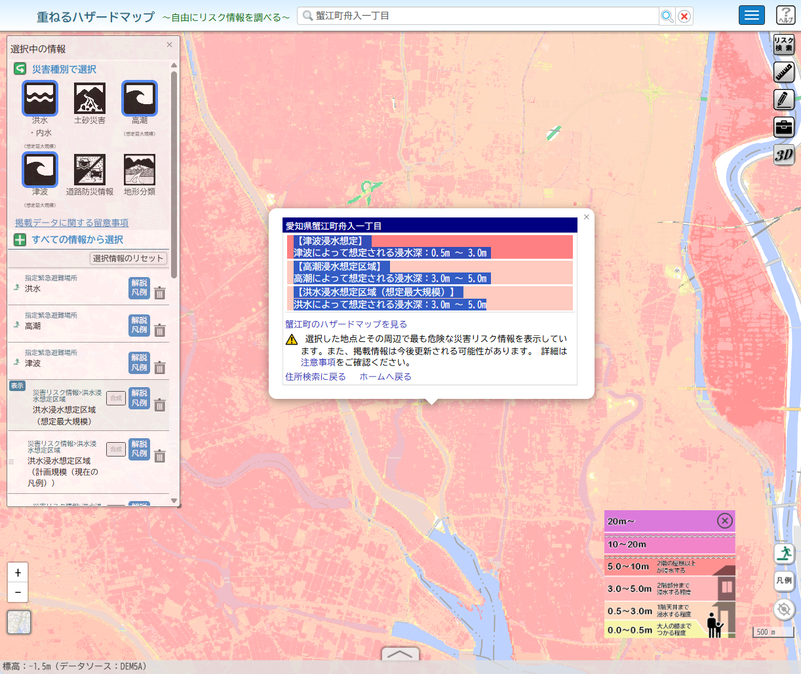
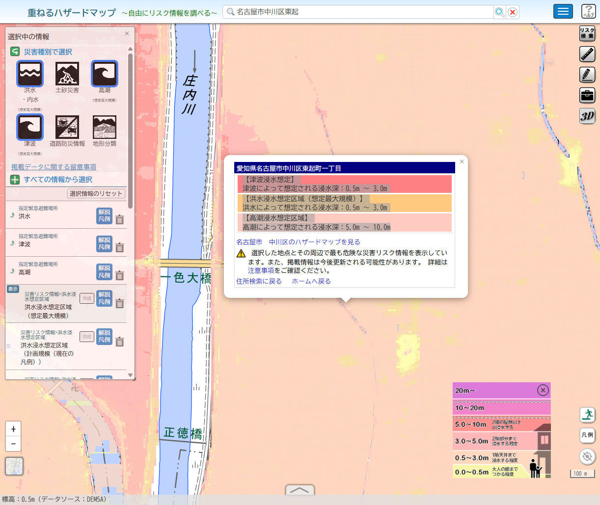

愛西市大野町山
申込済み／駅近理想の基準価格
1,850万円
約27.2万円/坪
面積
224.67㎡
67.96坪
交通
富吉駅 徒歩4分
奥様の駅近条件に強い
道路
東側公道 約6.0m
読みやすい土地
位置づけ
駅近理想基準
購入不可でも物差しとして残す
確認点
ご主人様の名古屋感
希望条件との距離感を確認
東起町は、駅徒歩だけを見ると愛西市に劣ります。ただし、名古屋市内・約67坪・現実的価格・生活利便・分譲地内の安心感・ご主人様の納得感を同時に満たせる可能性があります。
判断の肝は、変形地そのものではなく、ハイムの建物プランで「建物・駐車・庭・外構・南側の抜け」をどこまで実現できるかです。
| 比較軸 | 愛西市大野町山 | 蟹江町舟入 | 中川区東起町 | 判断 |
|---|---|---|---|---|
| 奥様の交通条件 | 富吉駅徒歩4分。駅近の安心感は最も強い。 | 近鉄蟹江徒歩圏。ただし駅距離は愛西より伸びる。 | 駅徒歩22分は確認点。ただし中川車庫前バス・高畑・あおなみ線・自転車・送迎で再設計可能。 | 愛西を基準に、東起町は代替動線を確認 |
| ご主人様の納得感 | 広さはあるが、名古屋市内への希望とは距離がある。 | 87坪の広さは魅力。 | 名古屋市内・広さ・価格のバランスがあり、ご主人様の希望に合いやすい。 | 東起町に検討余地あり |
| 建物プラン | 比較的素直に入りやすい。 | 広いが、水路・道路・駐車動線の確認が必要。 | 変形地のため最重要。建物・庭・駐車・外構が成立するかを確認。 | 東起町はプラン次第で有力候補 |
| 道路・駐車 | 東側公道約6mで読みやすい。 | 北側2項道路約3.6m。南側水路を踏まえた駐車動線の確認が必要。 | 北側私道から頭で入り、敷地内転回して駐車する想定。駐車単体より配置全体が重要。 | 東起町は配置確認が必要 |
| 日当たり・抜け | 大きな懸念点は少ない。 | 南東側3階建て等の圧迫感は現地確認。 | 南側水路で日当たり・抜け感はプラス。草や管理は確認。 | 東起町に評価ポイントあり |
| 生活利便 | 郊外駅近型。 | 小学校・保育所・内科などは近い。 | スーパー約402m、コンビニ約249m、内科約346m。名古屋市内生活の利便あり。 | 東起町に利便性あり |
| 法規・インフラ | 市街化区域・第一種住居系で読みやすい。 | 市街化調整区域・浄化槽で確認事項が多い。 | 市街化区域・準工業。上下水道・都市ガス引込済み。準工業の周辺環境確認は必要。 | 東起町は実務面の確認がしやすい |
| ハザード | 高潮3.0〜5.0m、洪水3.0〜5.0m、津波0.5〜3.0m。 | 高潮3.0〜5.0m、洪水3.0〜5.0m、津波0.5〜3.0m。 | 高潮5.0〜10.0m、洪水0.5〜3.0m、津波0.5〜3.0m。 | ハザードは中川区東起町だけの懸念ではなく、三候補すべてに共通する前提条件として確認 |
| 総合 | 申込済み。奥様の駅近理想基準として残す。 | 広さ比較用。確認事項を踏まえて比較。 | 建物プランが取れれば、夫婦の現実的着地点として有力候補。 | 東起町を深掘り |



※スコアは現時点の比較整理用。建物プラン、バス通勤、地盤補強費、外構費の確認により更新。